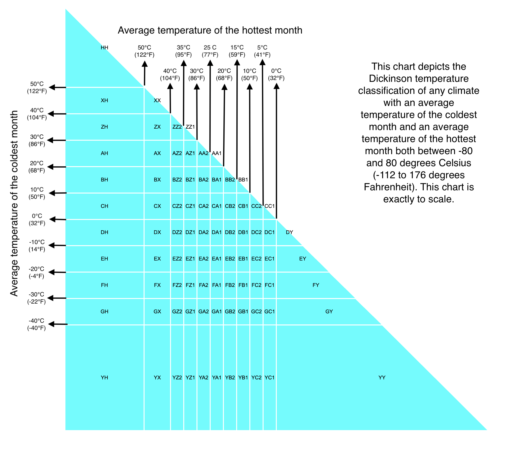

Suggested citation:
Dickinson, C. (2026).
The Dickinson Climate Classification: A Taxonomic Thermal–Hydrological Partition of Climate State Space
[Preprint]. Zenodo.
https://doi.org/10.5281/zenodo.18264771
Supplemental Figure 1 of 2: Dickinson Temperature Classification
Supplemental Figure 2 of 2: Dickinson Aridity Index (modified from UNEP aridity index)